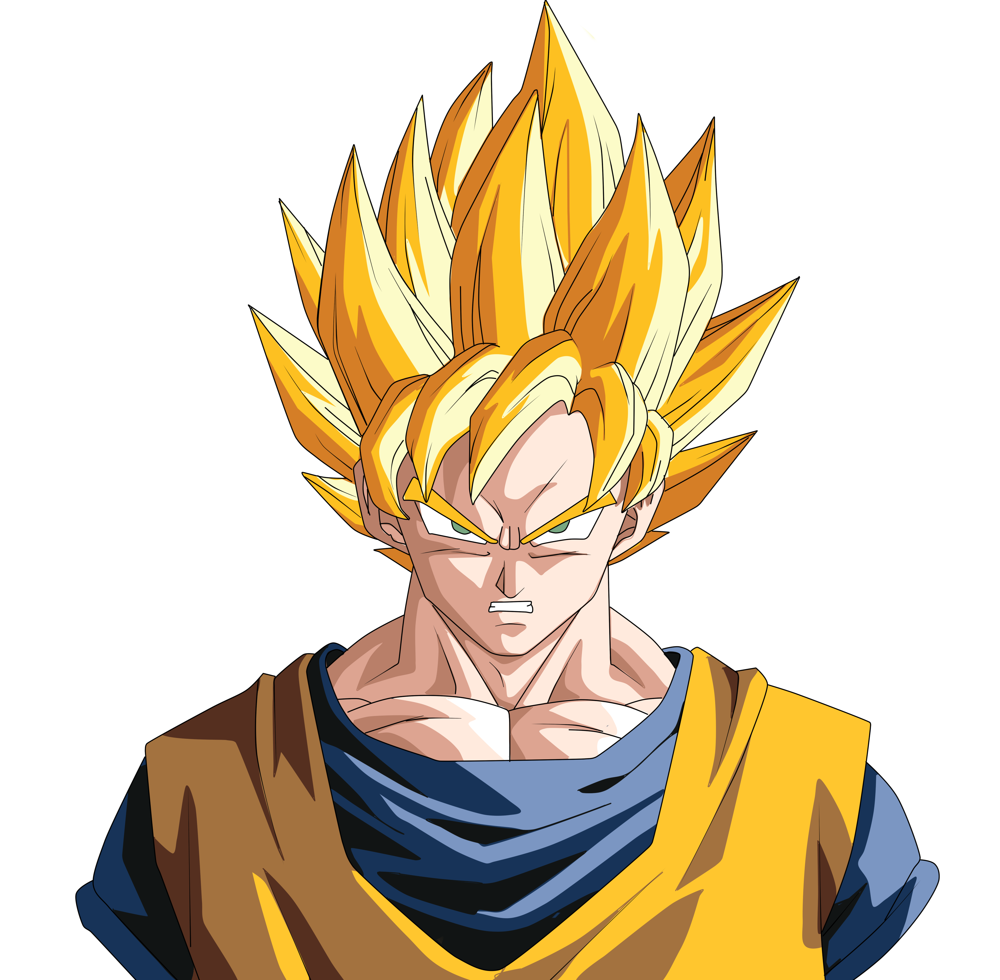
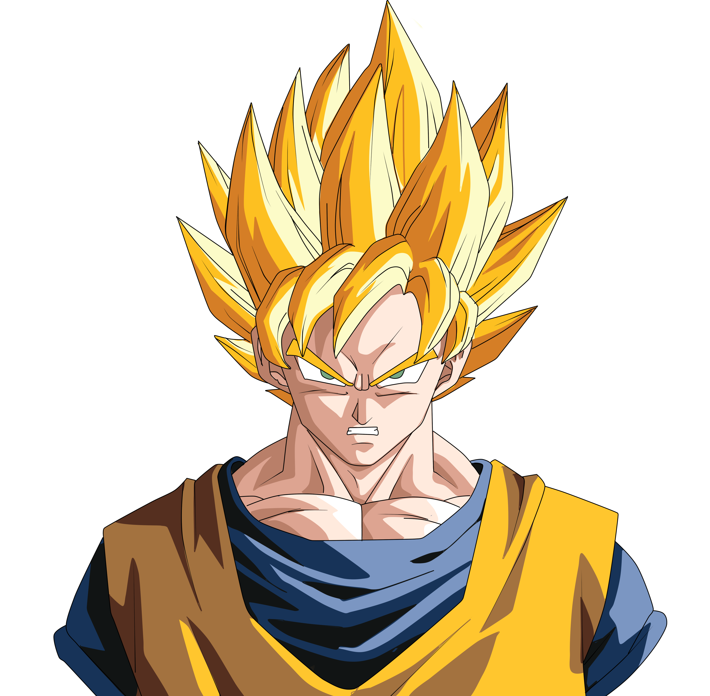
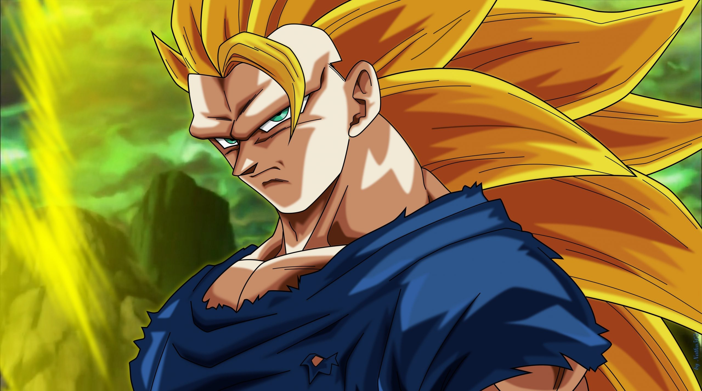
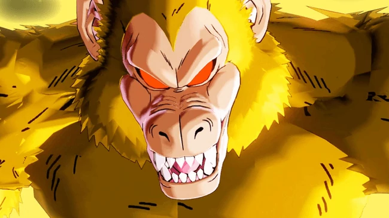
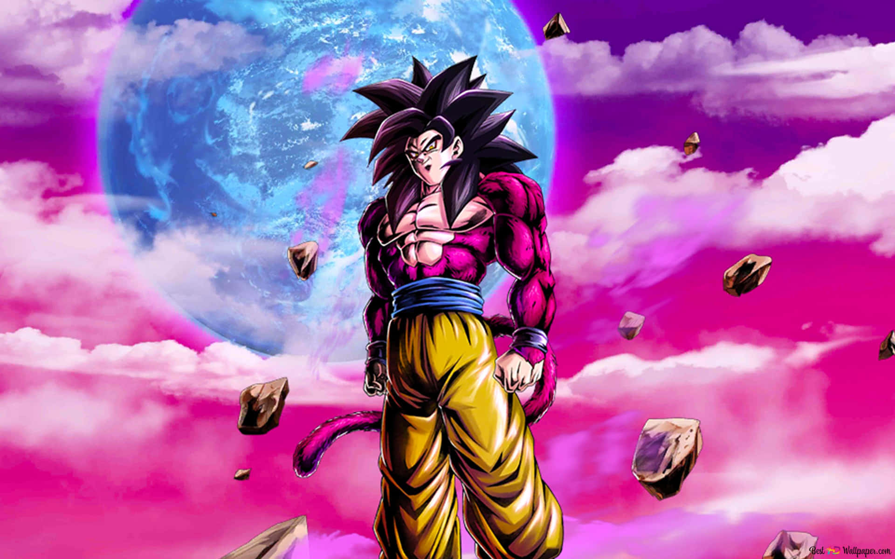
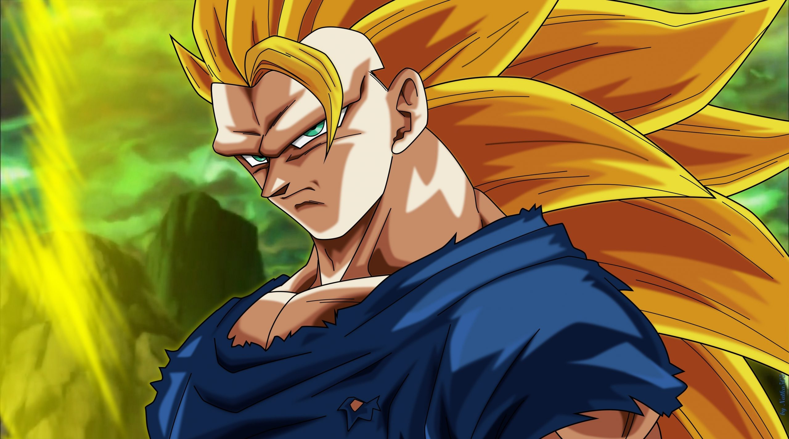
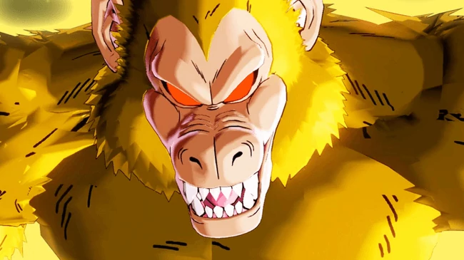
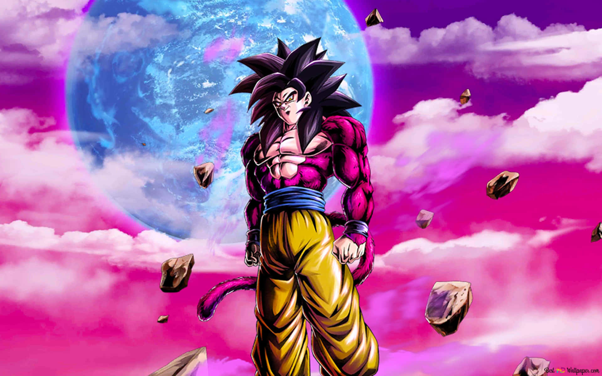
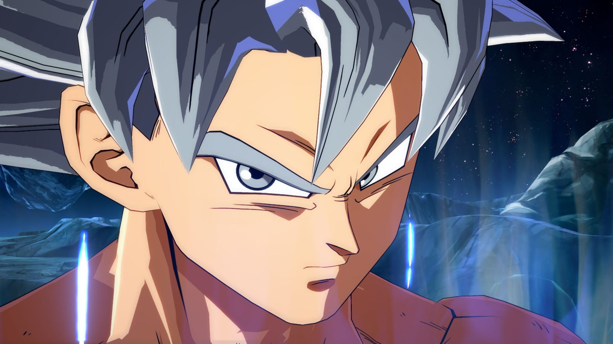
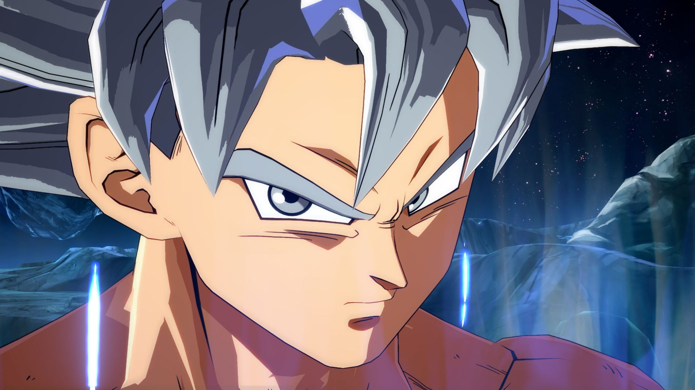

 







 

Oozaru
Esta foi a primeira transformação que vimos Goku utilizar, pois até lá não fazíamos ideia de que o Saiyajin era capaz de utilizar este tipo de técnica. Na realidade esta transformação não era utilizada sempre que Goku desejasse, uma vez que era algo inerente da raça Saiyajin - sempre que existisse uma lua cheia os Saiyajins se transformavam numa espécie de macaco gigante. Apesar dos níveis de poder aumentarem consideravelmente, Goku perdia toda a consciência e controlo sobre a sua mente, se transformando num verdadeiro animal irracional!
Kaioken 0><20*
O Kaioken é uma técnica inventada pelo King Kai, apesar disso Goku é o único capaz de a dominar por completo. Na sua forma base, o Kaioken duplica o poder de Goku! Ao longo da franquia tivemos a oportunidade de ver Goku utilizando versões mais poderosas do Kaioken, a mais poderosa multiplica o seu nível de poder em 100 vezes! Visualmente o aspeto de Goku não fica muito diferente, apenas o seu corpo fica rodeado por uma espécie de aura vermelha e os seus músculos ficam ligeiramente maiores.
Super Saiyajin Falso
Apesar de ser uma transformação super interessante, esta forma não é considerada cânone tendo apenas aparecido no filme Dragon Ball Z: Goku, O Super Saiyajin. Inicialmente todo mundo pensava que esta transformação era na realidade a forma Super Saiyajin, algo que só foi desmistificado durante a saga Freeza de Dragon Ball Z. Quando transformando em Super Saiyajin Falso, Goku fica rodeado por uma aura dourada, o seu cabelo fica levantado mas mantém a sua cor negra e as suas pupilas desaparecem por completo.
Super Saiyajin
A forma Super Saiyajin é uma das mais icônicas de toda a franquia Dragon Ball e foi responsável por mudar a forma como olhamos para os Saiyajins para sempre. Nesta transformação o nível de poder de Goku aumenta imenso, o seu cabelo fica levantado e muda de cor, para uma espécie de dourado, também os olhos de Goku ficam diferentes, com a sua pupila mudando para a cor azul. Até Goku ser capaz de dominar esta transformação ela não passava de uma lenda, sendo que muitos acreditavam que esta proeza só estava ao alcance do Saiyajin Lendário!
Super Saiyajin de Terceiro Grau
Esta transformação foi provavelmente a menos utilizada por Goku. Esta é a primeira derivação da transformação Super Saiyajin, só alcançada após imenso treino por parte do protagonista da franquia. Basicamente esta transformação ocorre quando um Saiyajin transformado em Super Saiyajin tenta aumentar o seu nível de poder, mas não consegue aceder à transformação Super Saiyajin 2. A Super Saiyajin de Terceiro Grau faz com que a força física de Goku aumente, assim como a sua resistência, no entanto ele perde imensa velocidade e agilidade, algo que faz com que esta transformação quase nunca seja utilizada.
Super Saiyajin II
Apesar de visualmente ser muito parecida com a transformação Super Saiyajin, esta é uma evolução e com um nível de poder completamente diferente. A força de Goku aumenta drasticamente assim que ele se transforma em Super Saiyajin 2, assim como a sua velocidade, resistência e energia. É certo que Goku é o protagonista, mas normalmente esta transformação é mais associada a Gohan, o primeiro Saiyajin a conseguir atingir esta poderosa forma!
Super Saiyajin III
Passados anos e anos a treinar Goku foi capaz de se transformar em Saiyajin 3 durante a Saga Majin Boo. Nesta transformação todo o potencial presente no sangue de um Saiyajin é utilizado, fazendo com que esta seja (teoricamente) a versão perfeita da transformação Super Saiyajin. Na realidade a Super Saiyajin 3 faz com que o poder da transformação base Super Saiyajin seja multiplicado por oito, ou seja algo verdadeiramente impressionante. Apesar de tudo isto a Super Saiyajin 3 deixou de ser uma transformação muito utilizada por Goku, passando para segundo plano.
Oozaru Dourado
Outra transformação que não é cânone em Dragon Ball é a Oozaru Dourado. Basicamente esta foi uma forma que Goku conseguiu atingir em Dragon Ball GT. Nesta trasnformação Goku ficava com a aparência do macaco gigante Oozaru, mas o seu pelo mudava de cor de castanho para dourado, numa evidente referência à transformação Super Saiyajin. Assim como na transformação Oozaru, o Saiyajin tem que ter a sua cauda e só se consegue transformar quando olha para uma lua cheia, ou para um planeta.
Super Saiyajin IV
Por falar em transformações que não são cânones e que pertencem a Dragon Ball GT, não poderíamos deixar a Super Saiyajin 4 de fora! Basicamente esta transformação é diferente de todas as outras. Aqui para conseguir atingir esta forma Goku tem que ter a sua cauda, ter poder suficiente para se transformar em Oozaru Dourado e capacidade para conseguir ganhar consciência nessa forma. Quando Goku ganha controlo sobre si, ele é capaz então de se transformar em Super Saiyajin 4. A nível de aparência esta transformação é uma mistura de Super Saiyajin e Oozaru.
Super Saiyajin Deus
Assim que Dragon Ball Super surgir, novas transformações entraram para o cânone da franquia, algo que não acontecia desde a Super Saiyajin 3 que estreou em Dragon Ball Z. A Super Saiyajin Deus é a transformação utilizada por Goku assim que ele consegue aceder a Ki Divino. Esta forma só é alcançada após um ritual junto de outros seis Saiyajins de coração puro, ou então através de um treino junto de uma entidade divina. Quando atinge esta forma Goku é capaz de defrontar seres divinos, como são o caso dos Deuses da Destruição. Mesmo assim a Super Saiyajin Deus não é suficiente para os derrotar.
Super Saiyajin Azul
Uma vez dominada a Super Saiyajin Deus, Goku pode combinar esta transformação com a forma Super Saiyajin. O resultado dessa mistura? A Super Saiyajin Azul, também conhecida por Super Saiyajin Deus Super Saiyajin. Esta é sem dúvida uma das transformações mais poderosas de Goku e a segunda transformação Super Saiyajin com maior nível de poder (ficando apenas atrás da Super Saiyajin Azul Evolução apenas dominada por Vegeta e da Super Sayajin Lendária de Broly). Atualmente a Super Saiyajin Azul é provavelmente a transformação mais utilizada por Goku, se tornando numa presença habitual tanto no anime como no manga.
Super Saiyajin Azul Kaioken
Com esta combinação Goku conseguiu levar os seus níveis de poder para um patamar verdadeiramente absurdo! Assim que atinge a forma Super Saiyajin Azul, o protagonista de Dragon Ball é capaz de a combinar com a técnica Kaioken. Com a transformação Super Saiyajin Azul como uma das mais poderosas, assim que Goku ativa o Kaioken o seu nível de poder aumenta em 20 vezes! Tivemos a chance de ver esta combinação em ação durante o Torneio do Poder, em especial no confronto entre Goku e o Guerreiro do Universo 11, Jiren!
Instinto Superior Incompleto
Esta é basicamente (como o nome indica) a forma incompleta da técnica Instinto superior. Antes de Goku conseguir aceder a todo o potencial desta técnica ele demonstrava o seu aumento do poder através transformação. Na Instinto Superior Incompleto, Goku mantém o seu cabelo no formato e cor original, no entanto as suas pupilas viram cinza e o seu corpo fica rodeado por uma aura azul e branca. Mesmo sendo uma forma incompleta, esta demonstrou ser super poderosa e suficiente para vencer maior parte dos seus adversários!
Instinto Superior Dominado
Assim que Goku consegue dominar a Instinto Superior o melhor é mesmo sair do seu caminho! Nesta forma, Goku fica praticamente invencível. Para além do seu poder de ataque aumentar em muito os seus reflexos e velocidade aumentam para um nível que nem alguns deuses conseguem acompanhar. Visualmente esta forma é representada através do cabelo cinza de Goku, assim como as suas pupilas que ficam da mesma cor. Também a sua fisionomia muda um pouco, ficando o Saiyajin com os seus músculos um pouco maiores!